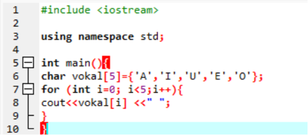
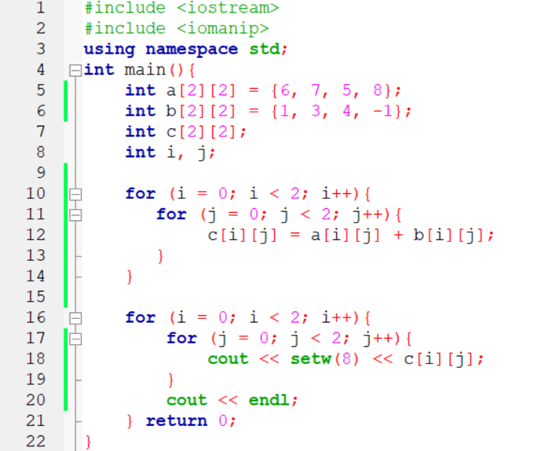
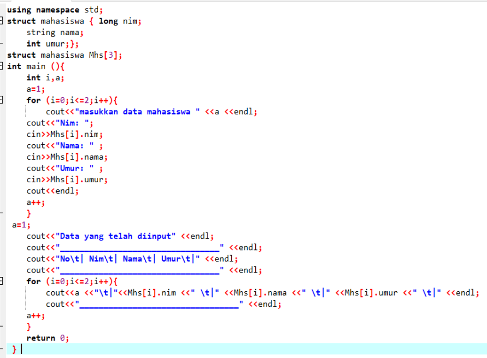

JOBSHEET 6
Judul Praktikum: Array
Tujuan Praktikum
- Memahami konsep array dalam pemrogram C++ secara benar.
- Mengenal bentuk array dalam pemrograman baik berdimensi satu, dimensi dua atau dimensi banyak secara benar.
-
- Dapat menggunakan bentuk-bentuk array dalam aplikasinya pada pembuatan program secara tepat.
-
- Dapat mengembangkan bentuk-bentuk array dalam pemrograman secara benar.
-
Praktikum
Praktikum 6.1 (Array 1 Dimensi)

Praktikum 6.2 (Array 2 Dimensi)

Praktikum 6.3 (Array Multidimensi)
